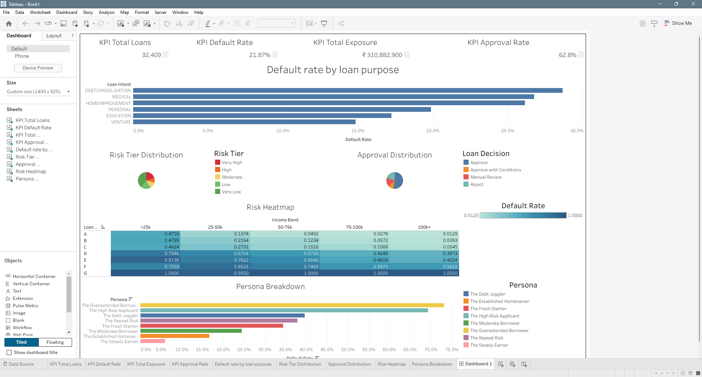

PROJECT CASE STUDY
Loan Default & Credit Risk Analysis
Problem, process, evidence and what I would improve next.

The problem
Explore loan default patterns and demonstrate how a simulated lender could review risk alongside approval volume.
Dataset
32,581 raw credit-risk records; the saved cleaning pipeline produces 32,409 records after duplicates and invalid records are removed. This project is an educational simulation, not a deployed lending service.
My contribution
Built data-quality checks, exploratory analysis, engineered features, logistic regression, risk tiers and decision rules, with a Tableau reporting workflow and challenger-model comparisons.
Approach
Clean and impute inputs; engineer loan-to-income and other features; split data 80/20 with stratification; fit a standardized, class-balanced logistic regression baseline. Compare Random Forest and Gradient Boosting separately.
Results
The saved baseline results report 80.58% accuracy, 78.77% recall and 0.8757 ROC-AUC. These are logistic-regression results, not XGBoost results. The Tableau screenshot shows the saved 32,409-record portfolio and its simulated approval rules.
Limitations
Imputation happens before the split in the existing workflow, which can leak distribution information. Reported model performance should be treated as provisional until preprocessing is fit on training data only. Scores and approval thresholds are illustrative; currency formatting in the dashboard does not establish dataset currency.